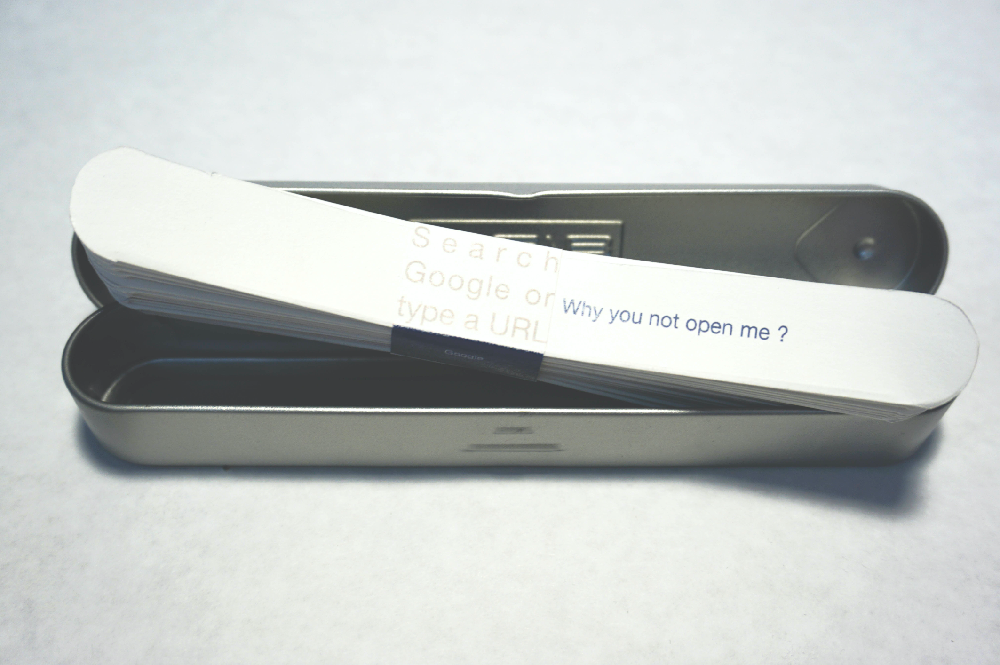
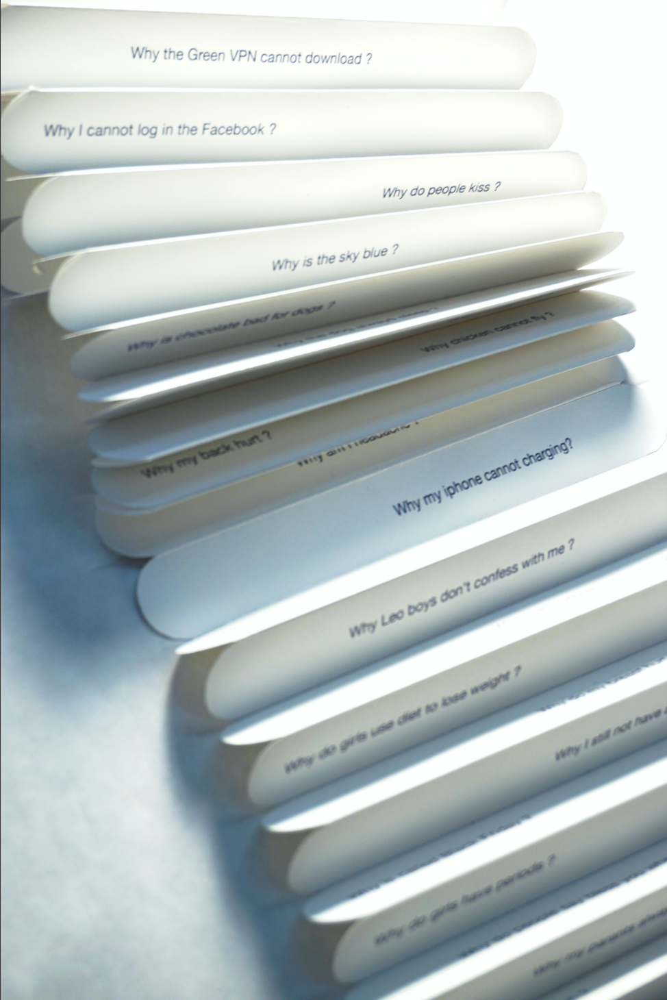

Why you always ask “why” , search bar book art design, 2018
1 in x 6.5 in for book, 1.1 in x 1 in x 0.25 in for book middle little cover, 52 pages, one-side book, metal book cover box
Why you always ask “why” search bar book piece is from my search history list on Google searching engine. The book size and font using are similar to the shape of the search bar and typing words on Google. I collected some of the interesting questions I ask in general. To Google, who always be here to answer my questions.




